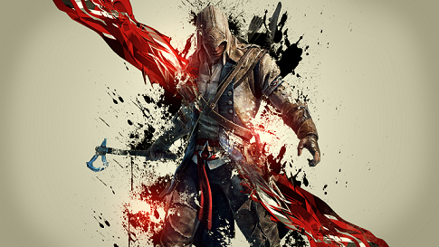

Assassin's Creed Origins is heading to #gamescom2017! Check out the full schedule here.
.
Fear not the darkness, but welcome its embrace.
Ubisoft took advantage of the last year to take a rest from the franchise to ensure that Assassin's Creed: Origins be an innovative adventure that.Assassin's Creed Origins Director Explains Combat Changes PlayStation LifeStyle-15 hours ago Assassin's Creed Origins game director breaks down combat changes PCGamesN-12 hours ago Assassin's Creed: Origins breaks down the combat in developer video Videogamer.com-19 hours ago Assassin's Creed Origins Combat Trailer Introduces a New RPG ... XboxAchievements.......
Earlier this month, we brought you the news that the next Assassin’s Creed game, previously known by its working title ‘Empire’, is now called ‘Origins’. We also brought you several other rumoured details, including its era (ancient egypt) and that it will feature boats. This was quickly backed up by a report from Eurogamer. Since then, we’ve received further confirmation of that aforementioned title and some of the other rumours going around by way of various images leaking their way out of Ubisoft. We are now able to exclusively share with you some of those......
One of the things that Ubisoft has worked on changing in the upcoming Assassin’s Creed Origins is the combat- gone is the stiff feeling, inadequate combat from the original games. Instead, in a game about assassins, it sounds like Ubisoft wants the act of assassinating to have some heft to it.Will they succeed? I am not fully sold based on the footage we have seen of the game yet, but it at the very least appears to be far better done than the last few Assassin’s Creed games have been in this regard. If you want to make up your own mind for yourself, you are free to check out the new gameplay footage for the game, released courtesy of IGN, and including a developer Q&A on the combat, and see what you think........